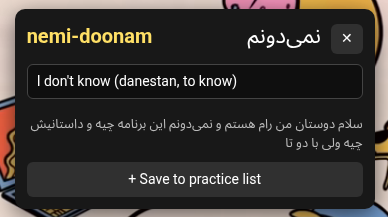
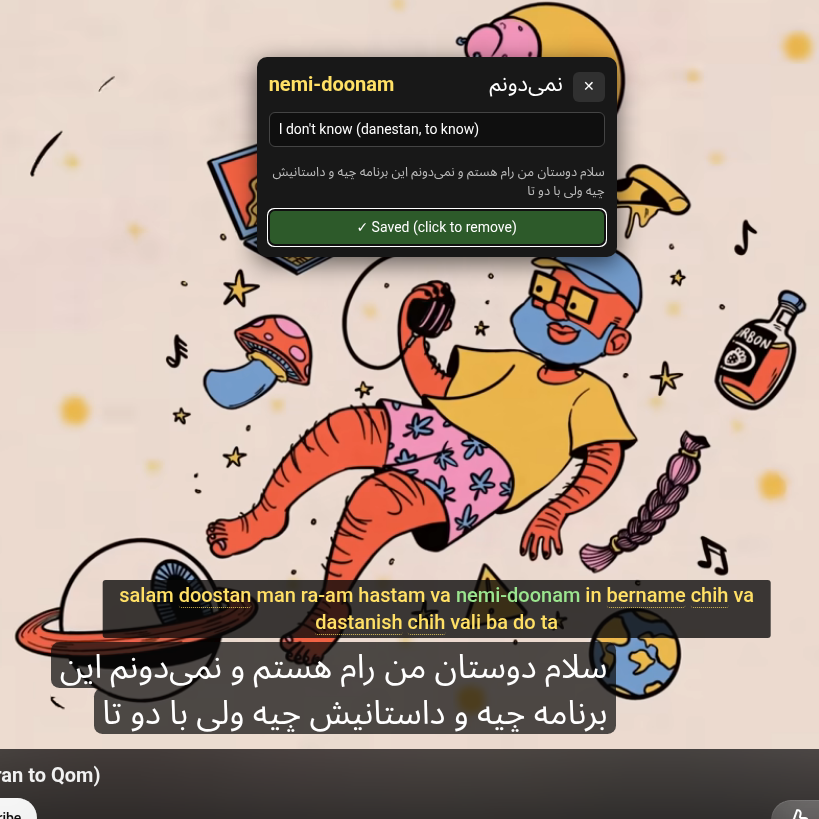

Finglish Subs
Read along with Persian YouTube captions, spelled out in Latin letters.
Finglish Subs is a browser extension for Chrome, Edge and Brave. It shows Persian YouTube subtitles transliterated into Finglish (Persian spoken words written with Latin letters), with tap-a-word meanings and a built-in practice list, so you can follow along and build vocabulary without needing to read Persian script yet.
Get it from the Chrome Web StoreWhat it does
- Shows Finglish subtitles on top of the video, above YouTube's own captions.
- Tap any Finglish word to see its English meaning (the video pauses while you look).
- Save words to a practice list, then review them with spaced-repetition flashcards.
- Works offline. Online dictionary lookup is optional and only runs when you ask for it.
Screenshots




Using it
| What | How |
|---|---|
| Show or hide Finglish | Alt+F on YouTube, or the switch in the toolbar popup |
| Change text size | Slider in the popup |
| See a word's meaning | Tap a Finglish word; the video pauses |
| Look up a word online | Tap "Look up meaning online" on the card (off by default) |
| Save a word | "Save to practice list" on the card |
| Practise | Popup > "Practice words" |
Limits
- Only works on youtube.com, and only for videos with Persian captions.
- Finglish has no single standard spelling, so spellings are one reasonable choice, not the only one.
- Built-in meanings cover about 360 common words and about 40 verbs. Other words use spelling rules or the online lookup.
Privacy policy
Last updated: 24 November 2026
What is stored. Your settings (on/off, text size, auto-lookup) and your practice list (words you saved, with their meanings, the sentence they came from, and the YouTube video ID and time) are kept in Chrome's local extension storage on your device. A small cache of caption data for recently watched videos is kept there too (up to 30 videos).
What is sent. The extension does not send data to the developer or to any analytics service.
- It requests caption text from YouTube, the same as the YouTube page does, so it can show subtitles.
- If you tap "Look up meaning online", or turn on auto-lookup, it sends the single Persian word involved to en.wiktionary.org to fetch a definition. Wiktionary's own privacy policy then applies.
What is not collected. No account, no name, no email, no browsing history, no analytics.
Deleting data. Remove the extension in chrome://extensions to delete
everything it stored. You can delete individual saved words from the practice page.
Contact. github.com/jkcog/finglish-subs